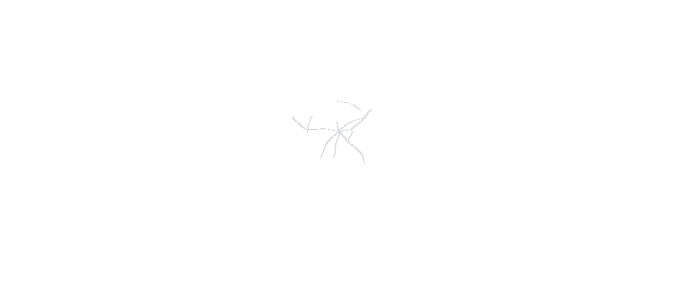
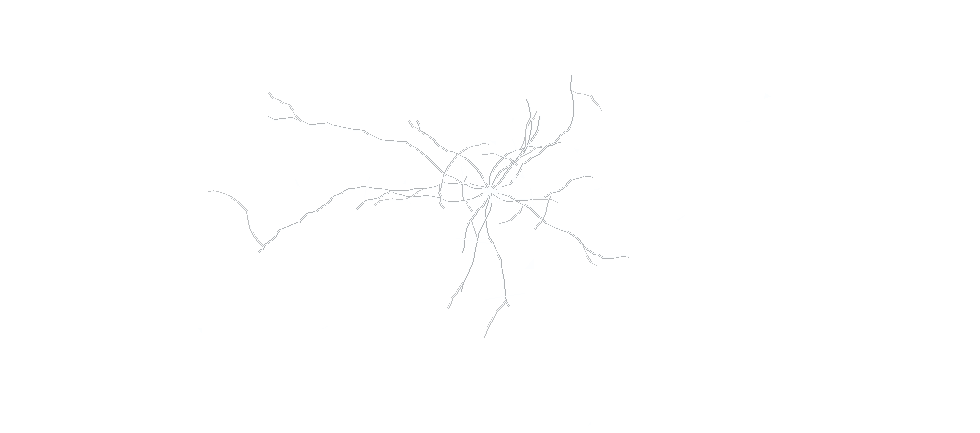
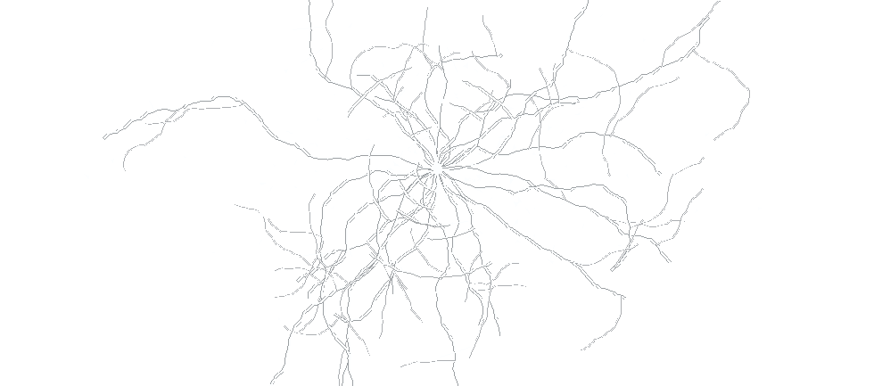

八足微光 · 启动台
CET Spider — 桌宠识词
引擎就绪 · 全离线
✕
Jar · 部署前
阈值步态 + 两骨 IK · 点一下让它跳



学习范围
词数取自考纲标签表 · 一档一整行
桌宠大小
1.00
显示
我的收藏
—
全部
待复习
首次使用
：部署后蜘蛛落在屏幕右下角 ——
点它的头
框选识词，
按住肚子
拖动，滚轮缩放，右键菜单。 收藏的词按
1 / 3 / 7 / 14 天
间隔复习。
部 署
设置
改动即时写入 settings 表
✕
识别引擎
RapidOCR
PaddleOCR
本机 ONNX Runtime · 纯离线
最大识词
8
一次框选最多收进几个词。收得越多，蜘蛛落地的腿越多。
最小置信度
低于这个识别分数的结果直接丢掉，不进词表。
键名：ocr_engine / max_words / min_conf · pet_scale 与三个显示开关在主界面
完成
部署完成 · 点头识词，拖肚子移动
← 回到启动台
启动台已关闭。
重新启动台